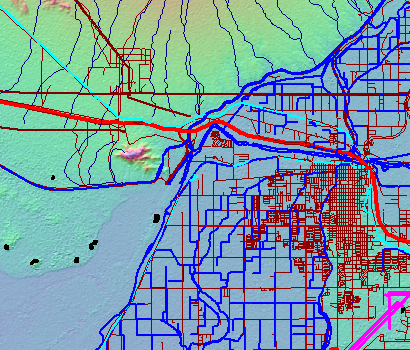
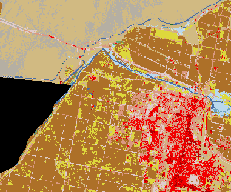
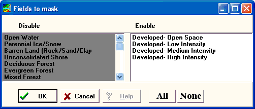
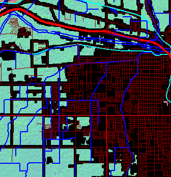

Mark Land Cover Categories as Missing
This can be slow. A faster option is described under NLCD manipulation.
Menu choice on the Edit menu available with a DEM available for the active map window.
Pick NLCD-2001 for the area.
The program will mask the selected NLCD categories on the map, and then remove them from the DEM.
Manually save DEM.
|
 |
SRTM DEM with Tiger data overlaid. This is SRTM-1, so there are some data voids. |
|
 |
NLCD-2001 of approximately the same area. It does not match exactly because of projection differences. |
|
 |
Selection of terrain categories to mask. Categories in the enable box will be marked missing in the grid. |
|
 |
Results of masking--missing data shown in black. |
Last revision 8/23/2009